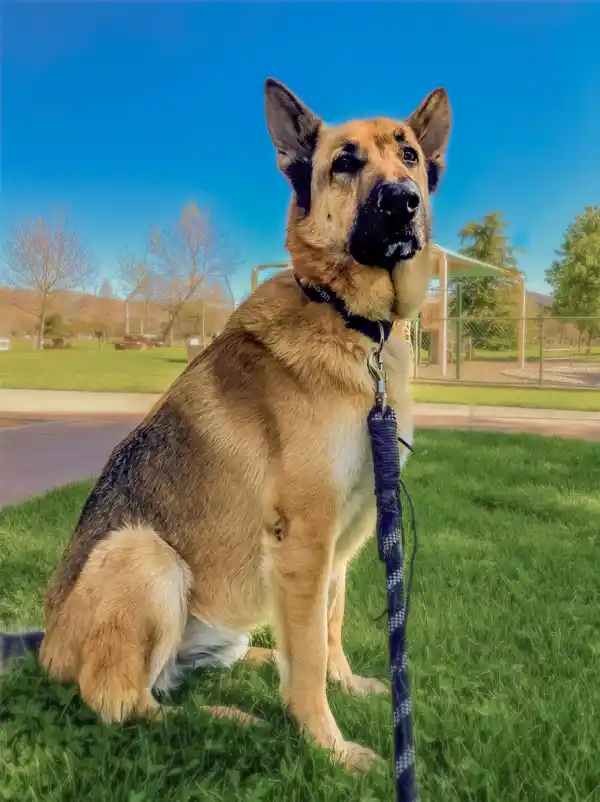

Pedestrian Provo
Walking
The city of Provo Utah was designed with pedestrians in mind. Sidewalks line every street and you can get anywhere you want to go on foot. The city is even designed in a grid street system so it’s easy to find your way around. In many areas lovely lawns line, both sides of the sidewalk. Beautiful trees provide shade and a touch of nature. Provo is a very family friendly city and it’s not unlikely to see mothers and fathers pushing strollers or kids walking with their parents to the closest park. You are also likely to come across neighbors walking their dog.
Bring Your Dog!

A dog’s love, loyalty, companionship and dedication to their families have made them beloved companions to people all over the world, and Provo is no exception. Many residents of Provo will be found taking their beloved pets on their customary walk on a regular basis.
I have grown fond of creating a little adventure in finding new routes, new roads to take my German Shepherd down. Then relying on the grid system to help me find my way back home. It’s delightful to see the different ways homeowners have chosen to decorate their yards and homes. Some share their green thumbs with lovely flowers and shrubbery. The sight and smells of which are therapeutic. Other neighbors may add interesting pieces to their yard décor. Such as an old bathtub pulled from the home and filled with soil and flowers, or a little pond and fountain.
So come, bring your pet and tour the streets of Provo. The large number of people and animals who travel the sidewalks makes it very important for the health and safety of everyone in the community that certain guidelines are followed.
Always keep bags on hand and pick up all your pet’s droppings and place them in a waste container. Keep your pet on a leash. Your pet may be very well behaved and friendly to everyone they meet but that doesn’t mean everyone else’s dog is. It is completely natural for a social dog to wag their tail with excitement and be eager to meet any new dog they come across. However not all dogs respond the same way. Some dogs will respond aggressively no matter how friendly the other dog’s approach is. These situations can escalate quickly and endanger the dogs and owners. So please, for everyone’s safety, keep your dog on a leash.